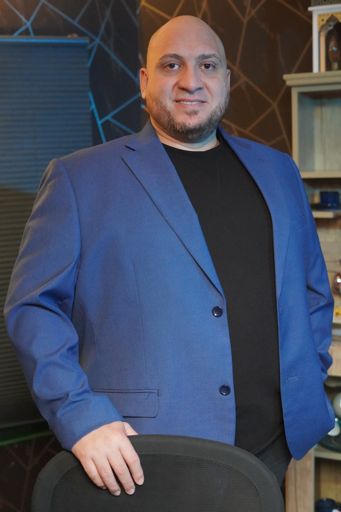
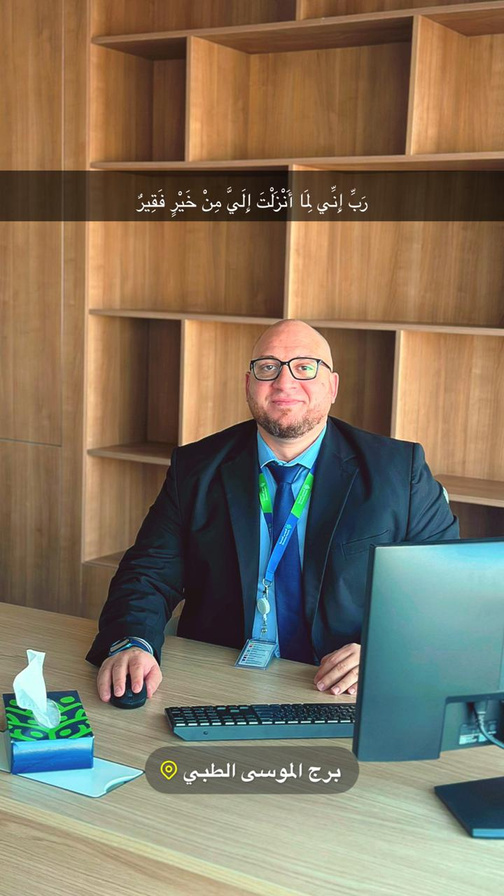

الطبيب
The physician
يبدأ من الحقيقة السريرية: ماذا حدث للمريض؟ وما الرعاية التي احتاجها فعلًا؟
Starts with clinical truth: what happened to the patient, and what care was actually needed?
أكثر من عقد من الخبرة عبر الطب، التأمين الصحي ودورة الإيرادات؛ رحلة تجمع الحس السريري بالقرار التشغيلي والمعرفة القابلة للتطبيق.
More than a decade across medicine, insurance and healthcare revenue cycle—combining clinical judgment with operational leadership and practical knowledge.

د. باسم علام طبيب وقائد في دورة الإيرادات الصحية. خبرته تتحرك بين التوثيق السريري، الترميز الطبي، التأمين، DRG، التسعير والتكلفة، مع فهم أن كل نقطة في المسار تؤثر في التي تليها.
Dr. Basem Allam is a physician and healthcare revenue cycle leader. His work spans clinical documentation, coding, insurance, DRG, pricing and costing—with a systems view of how every decision affects the next.
استكشف مجالات الخبرةExplore the expertiseيبدأ من الحقيقة السريرية: ماذا حدث للمريض؟ وما الرعاية التي احتاجها فعلًا؟
Starts with clinical truth: what happened to the patient, and what care was actually needed?
يربط الأشخاص والسياسات والبيانات كي يتحول العمل المتفرق إلى مسار واحد واضح.
Connects people, policy and data so fragmented work becomes one clear pathway.
يشرح المفاهيم المعقدة بلغة عملية عبر منصة «دكتور علام» ومئات المواد المرئية.
Translates complex concepts into practical language through Dr 3llam and hundreds of videos.

RIYADH · SAUDI ARABIAرفض المطالبة قد يبدأ من توثيق غير مكتمل. اختلاف الإيراد قد يبدأ من تسعير لا يعكس التكلفة. بطء التحصيل قد يكون نتيجة ملكية غير واضحة للقرار. لذلك يبدأ التشخيص قبل الحل.
A denied claim may begin with incomplete documentation. Revenue leakage may begin with pricing that ignores cost. Slow collection may reflect unclear decision ownership. Diagnosis comes before solution.